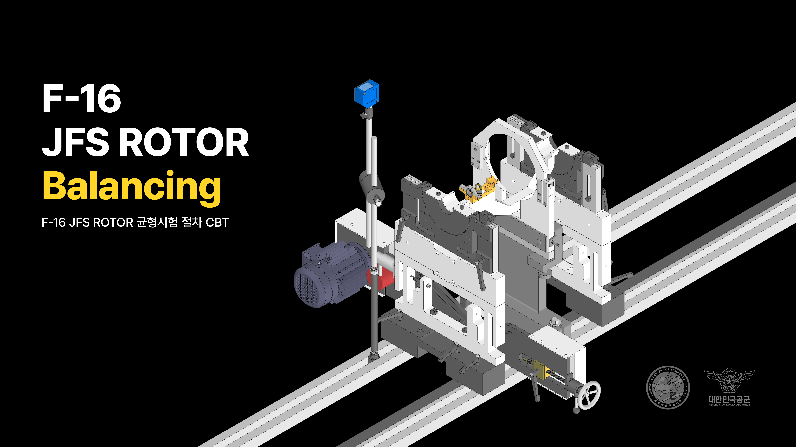

F-16 JFS ROTOR BALANCING SIMULATION

ABOUT
A full first person simulation of the balancing procedure of F-16 fighter jet JFS rotors, for internal use in the
Republic of Korea Air Force to train fighter jet maintenance technicians.
DEVELOPMENT INFO
-
Developed by Seyhyun Yang, Wankyum Kim, Junwoo Jun, Sunghyun Shin
-
20 month development cycle (2023 ~ 2025)
-
1 developer, 2 3D modelers, 1 UI/UX designer
-
Made using Unity Engine
CONTRIBUTIONS
CONTRIBUTIONS
As the sole developer on a small development team, all code was written by myself, and during the preproduction process, I developed several sets of tools such as a robust
hierarchical state machine, event system, serializable dictionaries, update order modifier, and more to accelerate development that other teams within my battallion
used to accelerate their own development processes. Initially I intended on creating a fully functional constructive solid geometry system to allow the simulation of
carving away the material of a JFS rotor, but after testing of the initial prototype, found it unfeasible to optimize it to run on the low-spec intranet computers the
users would be using, due to the complexity of the rotor geometry. What I ended up doing instead was finding the vertices of the rotor model that were within the volume
of the dremel model, and displacing them inward, giving the illusion that the parts touched by the dremel were 'grinded away'. Due to the sheer number of vertices from
the complexity of the rotor geometry, I had to create a compute shader to allow for the vertices to be efficiently and rapidly iterated through, and in the end, I got
it to run smoothly on the intranet computers. The UI was developed relatively late into the development cycle, as the UI/UX developer joined the team quite late. The
UI itself was relatively simple, but had a large number of simple elements, and after running into far too many bugs while trying to develop it, ended up strongly binding
every UI state to a state machine, which completely got rid of any issues of certain elements not being properly set active or inactive.